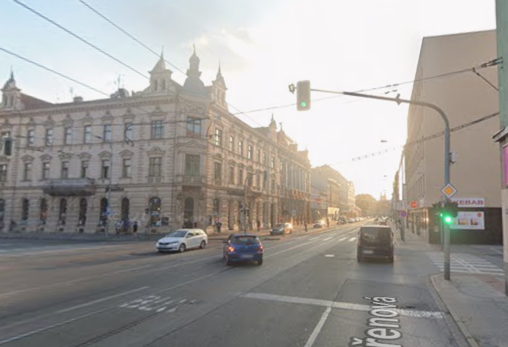
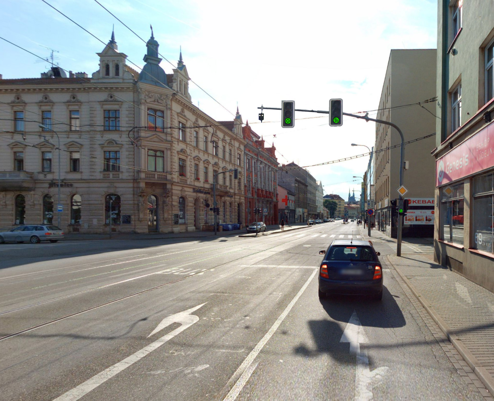
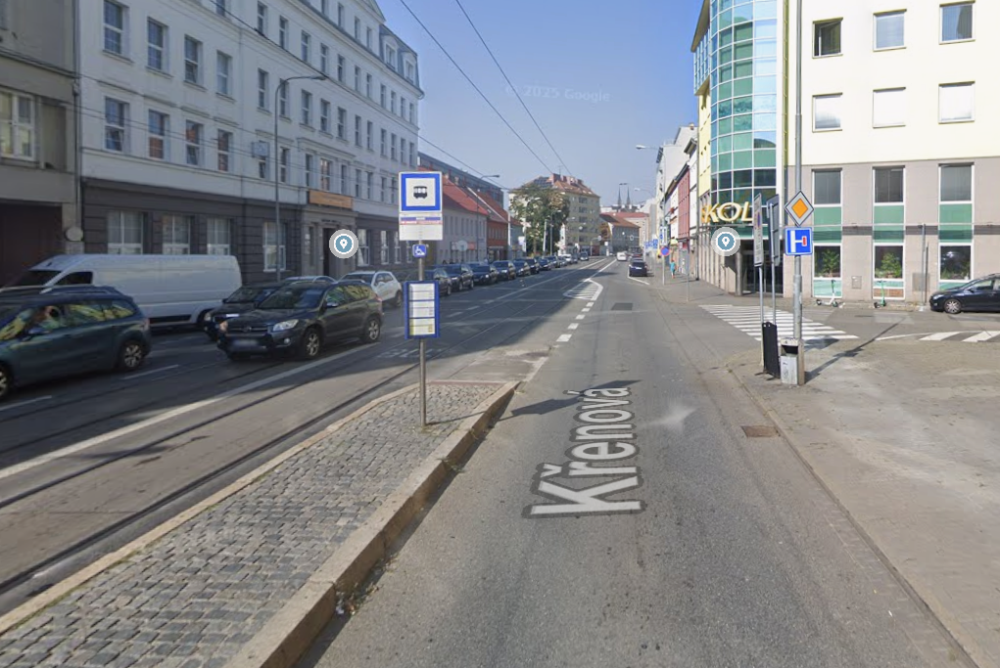
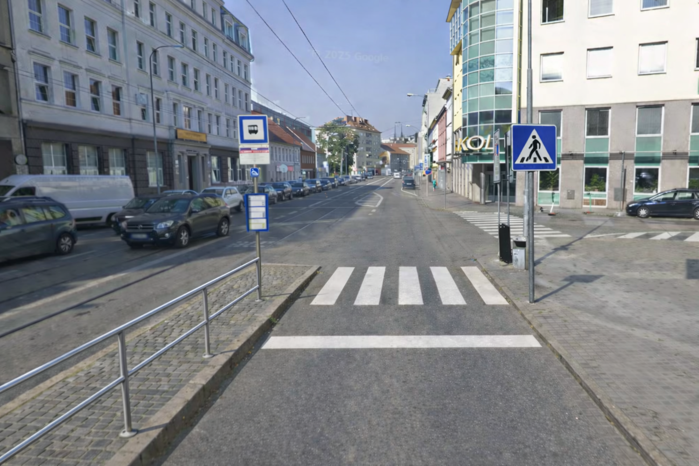

Click anywhere or press Esc to close
Cílem projektu je zvýšit bezpečnost a plynulost dopravy na křižovatce Křenová–Masná v Brně (Trnitá). Jedná se o místo s vysokou frekvencí chodců, automobilů i tramvají, kde dlouhodobě dochází k nebezpečným situacím při levém odbočení a při pohybu chodců mezi zastávkou a chodníkem.
Projekt navrhuje instalaci samostatného semaforu pro levé odbočení, nový přechod pro chodce, synchronizaci semaforů a doplnění zábradlí, aby se zvýšila bezpečnost všech účastníků provozu.


| Navrhovaný semafor | Podobný existující semafor |
|---|---|


| Navrhovaný přechod | Existující přechod |
|---|---|
| Nesynchronizované semafory |
|---|
Na křižovatce dlouhodobě dochází k nebezpečným situacím při levém odbočení směrem na Masnou, kde vozidla kříží tramvajový provoz.
Chodci nemají bezpečný a legální způsob, jak se dostat mezi tramvajovou zastávkou a chodníkem.
Nesynchronizované řízení přechodů, chodci často reagují intuitivně vidí zelenou na jednom semaforu a automaticky vstupují do vozovky, i když na druhém je stále červená a auta projíždějí vysokou rychlostí. To vede k nebezpečným situacím. Je nutné nastavit semafory tak, aby se zelená rozsvítila na obou přechodech současně a předešlo se chybným reakcím chodců.
Projekt zlepšuje bezpečnost a plynulost dopravy pro všechny uživatele této oblasti:
| Položka | Počet / jednotky | Cena za jednotku | Cena celkem | Zdroj / poznámka |
|---|---|---|---|---|
| Semafor – LED hlava | 1 ks | 4 700 Kč | 4 700 Kč | Technopark – 3-komorový LED semafor |
| Montáž semaforu + kabeláž + úprava DB | 1 | 150 000 Kč | 150 000 Kč | Orientační cena práce + materiál |
| Montáž zábradlí a vyznačení přechodu | 1 | 100 000 Kč | 100 000 Kč | Orientační cena včetně práce a materiálu |
| Úprava řadiče SSZ | 1 | 40 000 Kč | 40 000 Kč | Orientační cena práce + materiál |
| Vyznačení přechodu pro chodce | 3 ks | 1 595 Kč | 4 785 Kč | Barva Signocryl S2856: Heureka |
| Dopravní značka IP6 | 1 ks | 2 439 Kč | 2 439 Kč | Znacka |
| Půjčení plošiny (1 den) | 1 | 3 680 Kč | 3 680 Kč | Půjčovna Vlk |
| Zábradlí | 10 ks | 3 061 Kč | 30 610 Kč | Délka 2000 mm – žárový zinek |
| Cena celkem realizace | 336 214 Kč |
| Položka | Počet | Cena za jednotku | Cena celkem |
|---|---|---|---|
| Projektová dokumentace, technický dozor, BOZP | 1 | 80 000 Kč | 80 000 Kč |
| Položka | Počet (roky) | Cena ročně | Cena celkem |
|---|---|---|---|
| Údržba semaforu / signalizace | 3 | 1 000 Kč | 3 000 Kč |
| Údržba přechodu / značení | 3 | 10 000 Kč | 30 000 Kč |
| Celkem provozní náklady | 33 000 Kč |
| Sekce projektu | Cena celkem |
|---|---|
| Realizace | 336 214 Kč |
| Projektová dokumentace | 80 000 Kč |
| Provozní náklady (3 roky) | 33 000 Kč |
| Celkem (orientačně) | 449 214 Kč |
Ceny jsou orientační a vycházejí z tržních nabídek (semafory, barvy, značení, plošiny). Konečné náklady budou upřesněny po oslovení dodavatelů a zpracování projektové dokumentace. Fotografie jsou generované pomocí AI a mají pouze ilustrační charakter.